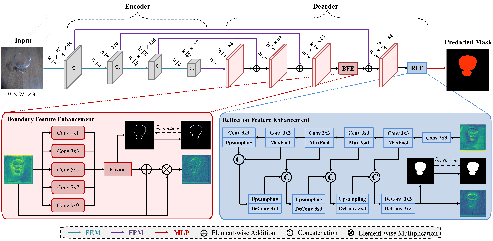
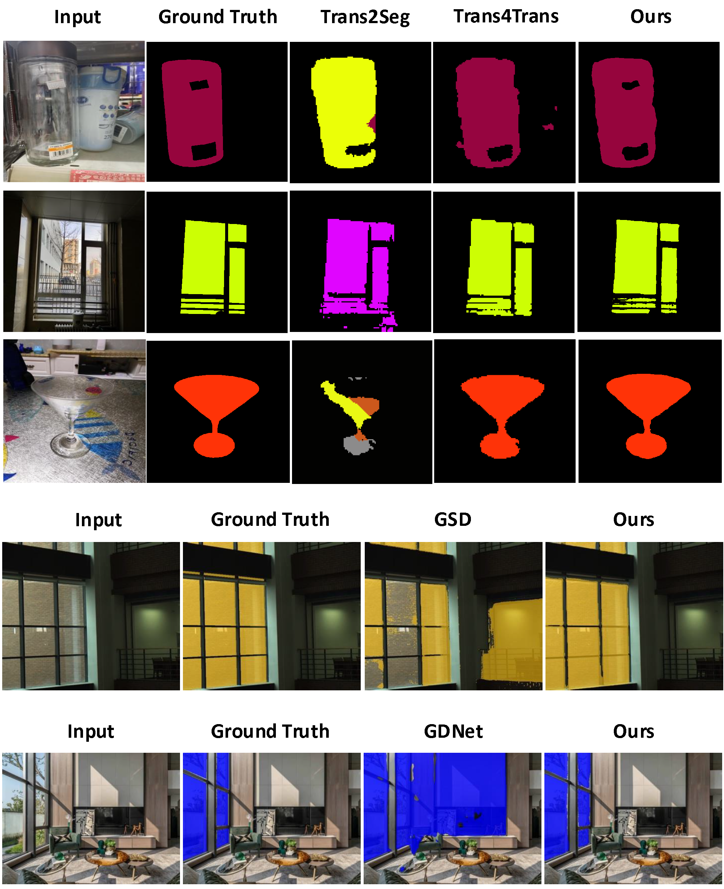
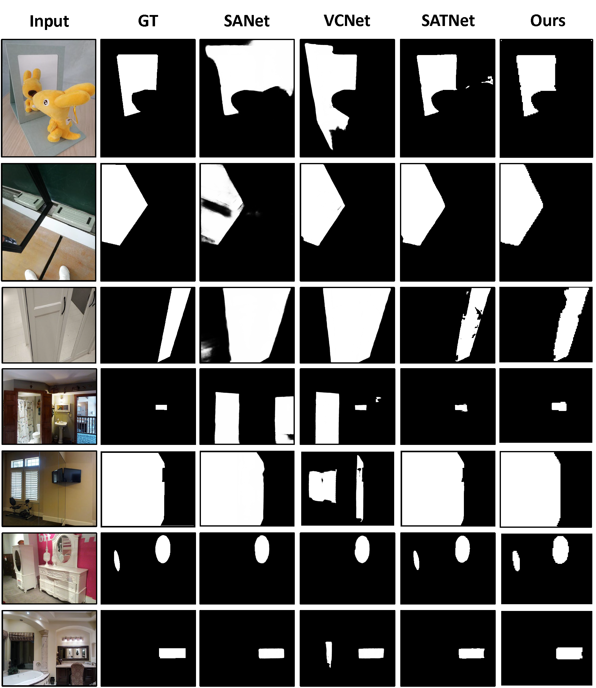
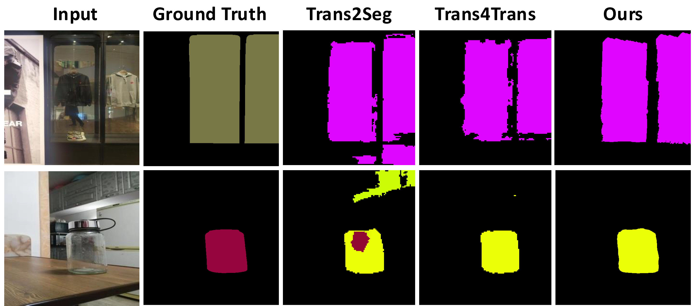

Introducing TransCues — Pyramid Vision Transformer with BFE & RFE
1HKUST 2Trinity College Dublin 3Nankai University 4CFAR, A*STAR
Abstract
Glass is a prevalent material in everyday life, yet segmentation methods struggle to distinguish it from opaque materials due to its transparency and reflection. While human perception relies on boundary and reflective-object features to distinguish glass objects, the existing literature has not yet sufficiently captured both properties.
We propose TransCues, a pyramidal transformer encoder-decoder architecture to segment transparent objects. Our key modules — Boundary Feature Enhancement (BFE) and Reflection Feature Enhancement (RFE) — capture these two cues in a mutually beneficial way.
Extensive evaluations show state-of-the-art performance across glass segmentation, mirror segmentation, and generic segmentation benchmarks, demonstrating broad versatility beyond specialized transparent-object methods.
Keywords
Boundary Cue (Geometric)
Glass objects exhibit high-contrast edges. The BFE module learns multi-scale boundary features via parallel convolution blocks (1×1 to 9×9 kernels), supervised by a Sobel-based boundary loss that measures gradient alignment with ground truth.
Reflection Cue (Appearance)
Reflections on glass surfaces provide localised visual signals. The RFE module employs a convolution-deconvolution U-Net to capture and enhance reflection features, distinguishing glass from non-glass regions without requiring specialist sensors.
Method
An encoder-decoder pyramid transformer where BFE and RFE modules are placed at the end of the decoder — empirically the optimal placement — to capture boundary then reflection cues in sequence before final MLP prediction.

Feature Extraction Module
PVT-based encoder that captures multi-scale long-range dependencies. Four stages output feature maps at 1/4, 1/8, 1/16, and 1/32 resolution.
Feature Parsing Module
Lightweight decoder alternative to FEM. Captures detailed-to-abstract representations of transparent objects across C1–C4 with minimal parameters.
Boundary Feature Enhancement
Parallel convolution blocks (1×1 to 9×9) fused via an ASPP-inspired fusion module. Supervised by a Sobel-based boundary loss on gradient alignment.
Reflection Feature Enhancement
Conv-deconv U-Net that detects localised reflections. Uses pseudo ground-truth for reflective categories (windows, cups, bottles) for supervision.
Experiments
TransCues outperforms the state-of-the-art across all three tasks — glass, mirror, and generic segmentation — using only RGB input, without depth or polarization data.
| Method | GFLOPs ↓ | MParams ↓ | ACC ↑ | mIoU ↑ |
|---|---|---|---|---|
| Trans4Trans-T | 10.45 | — | 93.23 | 68.63 |
| Ours-T | 10.50 | 12.72 | 93.52 | 69.53 |
| Trans4Trans-S | 19.92 | — | 94.57 | 74.15 |
| Ours-S | 20.00 | 23.98 | 94.83 | 75.32 |
| Ours-B1 | 21.29 | 14.87 | 95.37 | 77.05 |
| Trans4Trans-M | 34.38 | — | 95.01 | 75.14 |
| DenseASPP | 36.20 | 29.09 | 90.86 | 63.01 |
| Ours-B2 | 37.03 | 27.59 | 95.92 | 79.29 |
| Trans2Seg | 49.03 | 56.20 | 94.14 | 72.15 |
| Ours-B5 | 154.37 | 106.19 | 96.93 | 81.37 |
| Method | Backbone | MSD IoU ↑ | MSD Fβ ↑ | MSD MAE ↓ | RGBD-M IoU ↑ | PMD IoU ↑ |
|---|---|---|---|---|---|---|
| SANet | ResNeXt101 | 79.85 | 0.879 | 0.054 | 74.99 | 66.84 |
| VCNet | ResNeXt101 | 80.08 | 0.898 | 0.044 | 73.01 | 64.02 |
| SATNet | Swin-S | 85.41 | 0.922 | 0.033 | 78.42 | 69.38 |
| HetNet | — | 82.80 | 0.906 | 0.043 | — | 69.00 |
| Ours-B3 | PVTv2-B3 | 91.04 | 0.953 | 0.028 | 88.52 | 69.61 |
| Method | Input | TROSD IoU ↑ | TROSD mIoU ↑ | S2D3D mIoU ↑ |
|---|---|---|---|---|
| TransLab | RGB | 42.57 | 50.72 | — |
| DANet | RGB | 42.76 | 54.39 | — |
| TROSNet | RGB | 48.75 | 48.56 | — |
| Trans4Trans-M | RGB | — | — | 45.73 |
| Ours-B2/B3 | RGB | 67.25 | 67.23 | 53.98 |
↗ +18.5% mIoU over TROSNet on TROSD, without using depth input.
| Method | Backbone | GFLOPs ↓ | RGB-P mIoU ↑ | GSD-S mIoU ↑ |
|---|---|---|---|---|
| SegFormer | MiT-B5 | 70.2 | 78.4 | 54.7 |
| GSD | ResNeXt-101 | 92.7 | 78.1 | 72.1 |
| SETR | ViT-Large | 240.1 | 77.6 | 56.7 |
| GDNet | ResNeXt-101 | 271.5 | 77.6 | 52.9 |
| Ours-B4 | PVTv2-B4 | 79.3 | 82.1 | 74.1 |
Qualitative Results
TransCues accurately identifies glass and mirror regions of diverse dimensions and morphologies, differentiating them from look-alike non-glass regions. Our boundary and reflection modules reduce both over-detection and under-detection errors common in prior work.
FIGURE 4 · Glass segmentation comparison on Trans10K-v2, RGB-P, GSD-S (Input / GT / Trans2Seg / Trans4Trans / Ours)

FIGURE 5 · Mirror segmentation comparison on MSD, PMD, RGBD-Mirror (Input / GT / SANet / VCNet / SATNet / Ours)

FIGURE 6 · Failure cases on Trans10K-v2

Ablation
| Backbone | BFE | RFE | S2D3D | Trans10K |
|---|---|---|---|---|
| PVTv1-T | — | — | 45.19 | 69.44 |
| PVTv2-B1 | — | — | 46.79 | 70.49 |
| PVTv2-B1 | — | ✓ | 48.12 | +3.2 72.65 |
| PVTv2-B1 | ✓ | — | 50.22 | +5.5 74.89 |
| PVTv2-B1 | ✓ | ✓ | 51.55 | +7.6 77.05 |
BFE alone yields greater gains than RFE alone, confirming boundary cues as the primary discriminative signal for generic scenes too.
| Variant | MParams | mIoU ↑ |
|---|---|---|
| Baseline (no modules) | 13.89 | 70.49 |
| + RFE→BFE in Encoder | 48.98 | 73.54 |
| + BFE→RFE in Encoder | 48.99 | 74.12 |
| + RFE→BFE in Decoder | 14.90 | 75.11 |
| + BFE ∥ RFE in Decoder | 14.91 | 75.44 |
| TransCues (BFE→RFE Decoder) | 14.87 | 77.05 |
Decoder placement is significantly more parameter-efficient than encoder placement (14.87M vs 48.99M) while achieving the best performance.
Citation
BACKBONE
PVTv1 / PVTv2 (Tiny to B5 variants)
TRAINING
AdamW · lr 1e-4 · Batch 8 · 1× RTX 3090
DATASETS
Trans10K-v2 · MSD · PMD · RGBD-Mirror · TROSD · Stanford2D3D · RGB-P · GSD-S
INPUT
RGB only — no depth, no polarization